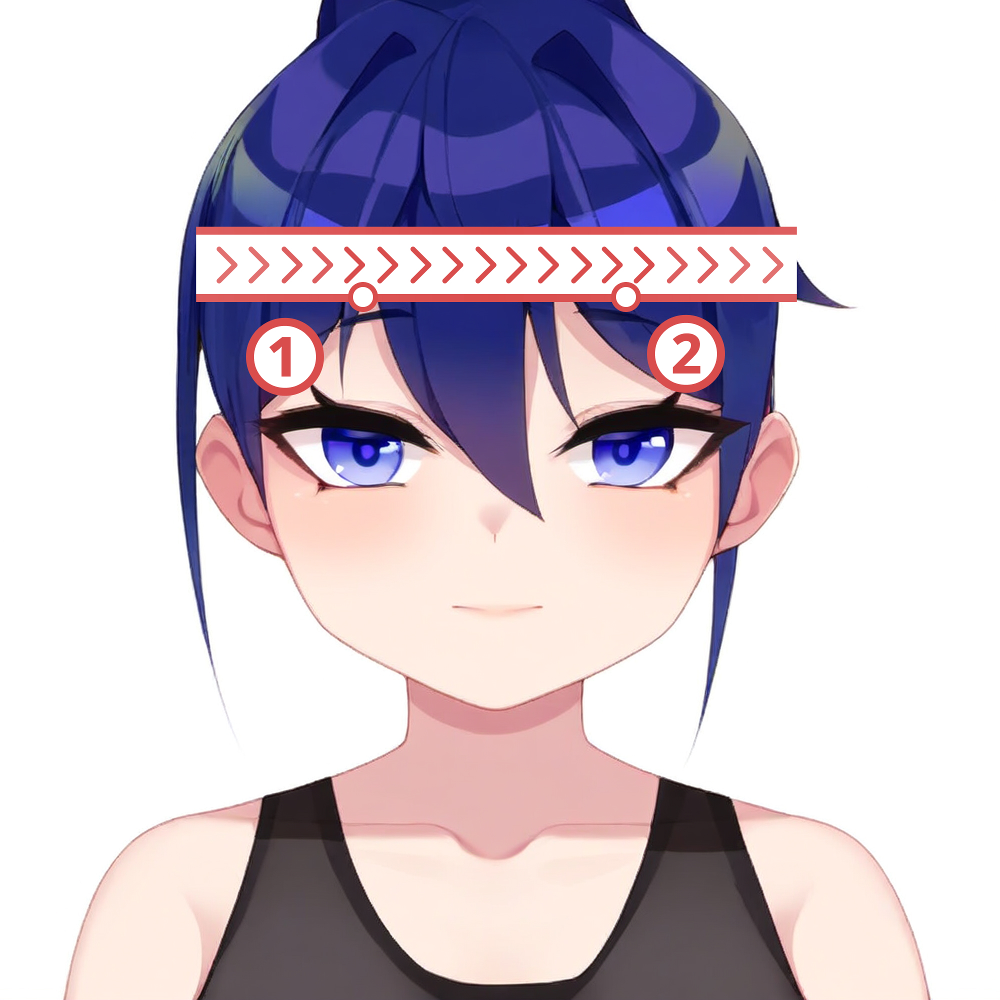

MEASUREMENT GUIDE
Generative AI Content Tips
Some images in this article are based on original KIGLAND images and have been regenerated by AI.
For MAICRA suit: Body Data Measurement
When ordering a Kigurumi Bodysuit, you need to provide your self measurement data.
For KIGURUMI: Head Data Measurement
When ordering a Kigurumi Mask, you need to provide your self head data.
Before measuring, it is recommended that you prepare a soft ruler and have someone else assist you. If you measure by yourself, it is suggested to do so in front of a mirror.
Measurement Items
Please measure and record the following data, fill in the Measurement Results Template, and send it to KigLand customer service.
| No. | Measurement Item | Reference Image | Description |
|---|---|---|---|
| 1 | Head Height (cm) |  | Measure the straight distance (③) between the hair whorl (①) and the chin (②) |
| 2 | Head Width (cm) |  | Measure the straight distance (③) at the widest part of the front of the head (① ②), excluding the ears |
| 3 | Head Circumference (cm) |    | Measure around the head passing above the eyebrows (① ②), 1cm above the ears (③), and the indentation at the back of the head (④) to obtain the circumference |
| 4 | Eye Height (cm) |  | Measure the straight distance (③) between the pupil (①) and the chin (②) |
| 5 | Eye Distance (cm) |  | Measure the straight distance (③) between the right pupil (①) and the left pupil (②) |
| 6 | Height (cm) |  | Measure the straight distance (③) between the top of the head (①) and the bottom of the feet (②) |
| 7 | Weight (kg) | ||
| 8 | Shoulder Width (cm) |  | Measure the straight distance (③) between the shoulder joints (① ②), recommended to draw lines on the wall for measurement |
Measurement Result Template
You can fill in the measurement results in the following template and send it to KigLand customer service:
Head Height: cm
Head Width: cm
Head Circumference: cm
Eye Height: cm
Eye Distance: cm
Height: cm
Weight: kg
Shoulder Width: cm
Reduce Measurement Error
- When you take measurements, keep your eyes level and don't look up or down;
- Whenever possible, have someone assist with the measurements;
- Use a flexible ruler when measuring head circumference, shoulder width, eye height, and interocular distance.
- Use a rigid ruler to draw lines on the wall when measuring head height and width.